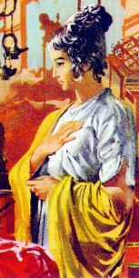

Era filha única de
Antônio e Silvana Taglivine. Sempre trabalhou arduamente na lavoura
para ajudar os pais na manutenção do orçamento doméstico, apesar
das dificuldades que sempre encontraram na comercialização dos
produtos agrícolas. Não era frívola e nem cultivava a natural
vaidade feminina. Trajava-se com simplicidade e não usava
qualquer pintura ou produto preparado para embelezar o rosto.
Seus cabelos eram castanho escuro e lisos, caprichosamente
arrumados ou acomodados na cabeça, às vezes com auxílio de um
modesto adorno.
Com a morte do pai,
mudou-se em companhia da mãe para Listra, residindo numa pequena
casa na propriedade de seu tio Orlando Taglivine. Juntas, mãe e
filha, passaram a trabalhar na vinha, ganhando o necessário para uma
vida modesta, mas digna e tranquila.
A propriedade
ficava a seis quilômetros da cidade. Semanalmente, após as ocupações
caseiras, principalmente nas bonitas e ensolaradas manhãs de domingo,
iam passear no povoado, apreciar o burburinho citadino e conhecer as
novidade do comércio.
Fazia quatro anos
que morava ali e muito embora possuísse excelentes qualidades pessoais,
até o momento Juliana não tinha decidido casar-se, afastava-se
delicadamente do assédio dos rapazes que se aproximavam. Por que
também, ainda não havia aparecido nenhum jovem que lhe tivesse
despertado uma forte afeição e simpatia, que apagasse para
sempre, a recordação do grande amor que teve
em sua juventude.
Lembrava-se
daquele amor com ternura e carinho ... Sempre que pensava nele,
sentia saudades do sorriso contagiante e sincero de Longino,
de seu procedimento correto e de suas palavras seguras e fieis...
Ecos de um passado que não lhe permitia sonhar, em face da
realidade que vivia atualmente, e também, da distância
que os separava, pela pobreza de ambos e
sobretudo, pela total falta de noticias, que vagarosamente ia
sufocando no coração os resquícios daquele amor de
sua vida.
 Verdadeiramente
Juliana não tinha esperanças de reencontrar Longino. Apesar de
estar na plenitude de seus 25 anos de idade, não alimentava nenhuma
ilusão. Estava convencida que era praticamente impossível
realizar aquele sonho que cultivaram quando
eram jovens.
Verdadeiramente
Juliana não tinha esperanças de reencontrar Longino. Apesar de
estar na plenitude de seus 25 anos de idade, não alimentava nenhuma
ilusão. Estava convencida que era praticamente impossível
realizar aquele sonho que cultivaram quando
eram jovens.
Por outro lado, nos
últimos domingos passados, sua vida começava a tomar outra direção.
É que apareceu em Listra um pregador importante, um homem de estatura
mediana, pouca barba, mas com uma grande simpatia pessoal, apesar
de possuir uma fisionomia sulcada por profundas rugas, emblemas
visíveis de uma caminhada sofrida pelos embates da vida. Era
possuidor de um notável vigor, de um linguajar claro e fluente,
que impressionava e cativava, porque se expressava com
coerência, simplicidade e uma lógica imperturbável. Chamava-se
Paulo e era um Apóstolo do SENHOR JESUS.
A principio, ela e a mãe
gostavam de ouvi-lo, mas não entendiam o que ele dizia. Ambas eram
pagãs e só conheciam os deuses dos pagãos, em particular as deusas
Juno e Minerva, suas preferidas. Todavia, na sequência daquelas
audiências públicas, Juliana começou a sentir-se cada vez mais
atraída pelas verdades que aquele homem ensinava. E foi assim
que, depois do sétimo domingo, ela e sua mãe, além de diversas
outras pessoas, solicitaram e foram iniciadas na nova religião,
recebendo o Sacramento do Batismo, passando a frequentar
normalmente a comunidade fundada por
Paulo de Tarso.
Aquele grupo, tímido
no início, foi crescendo e aumentando em número e em entusiasmo pela
Doutrina de DEUS, na certeza de que trilhavam o verdadeiro caminho.
Entretanto, com a
grande afluência de pessoas, começaram a aparecer os problemas na
comunidade, com a necessidade de se conseguir um local onde pudessem
realizar as reuniões com os fieis, protegidos do calor e da chuva.
Despontando
positivamente, Silvana e Juliana abriram caminho às iniciativas, doando
a metade da herança que receberam, que embora representasse pouco
financeiramente, sem dúvida era um generoso e estimulante gesto
de desprendimento para ajudar a Igreja nascente.
E com muita dedicação,
a partir daquela época, as duas empregaram as suas horas disponíveis para
participarem das reuniões dominicais e ajudarem a comunidade, que continuava
a crescer entusiasmada e perseverante, ao longo dos
meses e anos.

Próxima Página 
 Página Anterior
Página Anterior
Retorna ao Índice